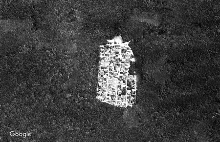

Ⅰ：201X年、鏡
二晩分の雪は脛のあたりまでを埋めていて、一歩ずつ、足をひきずって前進すると、ブロック崩しのようにひとマス分の道が拓けていく。集落を抜け、森を抜け、浜まで降りるその道中、何度も後ろを振り返った。帰りはテトリスの棒になってくぐり抜けられる。
湖を眺めた。まっさらな氷の粒がいつもの景色を書き換えている――ふんぞり返る山々も、ほのかに暖色を名残らせる向こう岸の溶岩も、枯れることのない森も、熱を失って湯だっている。ふと、兄に写真を送ろうかと思った。でも、垂れ耳の帽子と鼻まで引っ張り上げたネックウォーマーの隙間から、息のしない景色をただ睨み続けた。僕は霞む対岸をのろのろ進む赤い自動車を発見した。その赤は、お菓子作りに使う食紅とか、そういったものがスケッチブックの新しいページに滲んだみたいで、さっさと消えてくれたら湖と空だけが彩ったのに。
かといってムキになったのではなく、銀世界の魔性に誘われたのでもなく、おそるおそるという心持ちでもなく、絶対的にコントローラブルな足取りを自覚して、凍る湖のへりを強く踏みしめた。氷は厚く、圧された体重に反発して、ムッ、と鈍く響く。僕は年代物のテープレコーダーを肩からかけていた。チッ、という急勾配の波形を採取できるのは、もっと中心に近い薄氷だ。この湖は深い地下からの対流により、今の季節でも全面凍結することがない。空から見てみれば、銀細工の額に縁取られた飾り鏡のような形になっていて、僕はこの頃、自機とマップを照らし合わせて疾走するファーストパーソン・シューティング・ゲームのように世界を垂直に捉えていたから、その鏡には、僕の像が映っているはずだった。
保育園児の頃、この湖を見下ろす山によく連れていかれた。「山、行くよ」と母の一声があれば、家から歩いてすぐのところに登山口があり、道中にカエル岩とか双子ザルの木とかブタコウモリの巣とかの秘密のセーブポイントを見出したこの山を指すのだった。子供にも難しくないコースだったから、夏はほぼ毎朝、焼いたウィンナーと沢庵とおにぎりをタッパーに詰めて頂上で食べた――母が早起きに成功した日のウィンナーはタコの形だった。そして、地上を見物した。右手には宇宙からの贈り物みたいな色で光る湖が全貌をあらわし、左の方にはとりとめなく延びる樹の海。もっと手前には、木々の絨毯を四角い型でくり抜いた人の棲家があり、その格子状の集落のうち、湖に近い辺り、淡いグリーンのペンキに塗られた屋根が僕の家だった。すすきが茂っていると隠れるが、刈られた後だとよく見える。その二件隣、僕の家よりも一回り大きい屋根には三人兄弟が暮らしていた。ある日、同級生の次男と仲直りしていなかったためにぐちゃぐちゃの汗をかいてやっと山頂に着いたが、森と湖がいくら絵の具を混ぜてもつくれないグラデーションを描く限りでは、その赤い屋根も昨日の虫刺され痕みたいなものだと感じられた――あるいは、母にそう教えられたのかもしれないが。少なかれ、一メートルばかりの小人と三百メートルの巨人の視座を往復することに、魔法の薬を独り占めにしたかのような優越があったのを覚えている。
それから誰にいわれるでもなく、居間に貼られた世界地図、夜七時前に流れるＮＨＫの天気予報図、父の車のカーナビに魅せられ、鳥の目を養った。小学生になると九九よりも五大陸や日本列島の造形ばかり気になって、「日本で一番大きなトドーフケンはなんでしょう」と草むらのポケモントレーナーばりに誰彼見境なく挑みかかった。もちろん北海道に行ったことはなかったが、背の伸び悩んでいた僕の身の丈で通過した空間を凌ぐ大地の転写物は、心地よいめまいを誘う雲の上の神器だった。
なにより目を離せなくなったのは、職員室前の掲示板にあった半立体のハザードマップだった。カトリックの古地図がエルサレムをそうするように富士山を中心に据えた投影図は、いくつかの時間的順序を示す色で塗りわけられ、いつか到来しうるマグマの道筋を生の眼球の記憶と重ね合わせたものだった――ここは七日後に火の海になるらしい。いそいでエックスデーに向けた逃走経路を自由帳に書いてクラスメイトに披露すると、なぜか足蹴にされた。自作地図は持ち帰って冷蔵庫に貼り付けたが、その日から山が燃える悪夢を見るようになった。赤黒く染まった空を後景に、サイレンが鳴り、火の玉があちこちに落ちて地面が揺れた。コンクリートから火炎が噴き、集落を出る道が閉ざされた。未来のことを考えて立派だねえと僕を褒めた兄と母と父は呆然と立ち尽くすばかりで、キモいキモい死んじめえカス死ねボケハゲと僕を罵った同級生はヘリコプターで逃げた。いつの間にか誰もいなくなり、わけもわからず叫んだ。あいた口に火が飛びこみ、舌が焼けた。現実とは違い、夢の中では翼を生やせなかったのだ。
夢中になって指で縮尺を勘定するような熱心さはいつか鎮まったが、早巻きの中二病に罹患すると同時に、ふたたび記号化された世界が脳裏に浮かぶようになった。つまり、髪のセットや目つきや声の高さといった肉体をめぐる全てが悩みの種となり、夜中にいきなり陰茎に定規を当てたり小さな声で発声練習したりするような類の問題を、地図上に刺されたピン――日本、山梨県Ｍ郡Ａ村云々――に押し込むことで解決を図ったのである。にきびも虫歯も舌のやけども、すれ違いざまにみぞおちをぶん殴ってくる不良の先輩も、服を剥いでロッカーに閉じ込めてくるクラスメイトも、等高線よりはるかにきめ細やかな女子の肌も、すべて空中写真の影に隠して足の長い「文」の字の裏側に追いやった。地を這う経験的空間は真っ暗で、見通しがきかなかった。
家に帰るとディスプレイにかじりついた。そこでは自分がイナカ者であることを恥じなかった、というよりこの身に縛られたあらゆることがバレる必要がなかったので、湯水のごとく交換される情報の網に飛び込めば、獣の森にいることを忘れ、ブルーライトのあたたかみに包まれた。日々勃発する些細な文字喧嘩を追っていくうちにここでしか交わされない言語体系を身につけ、れっきとしたインターネットの住民となるや、音楽にハマった。僕がまず好んだのは鬱屈を吹き飛ばす超うるさいエレクトロニック・ダンス・ミュージックで、次に、衝撃的な発声器官のラップミュージックを経由して、ネットのオタクたちには教養とされているらしい古い音楽にまで遡った。こうして検索履歴上の音楽棚を充実させたのは、ノーミュージックノーライフなんて広告があるが、だいたい無料でほとんど無限に音楽を貪ることのできた僕の場合、教室の愚者を愚者たらしめる根拠を強化し、相対的に精神を高く昇らせるためだった。おひとりさまで、テイクミーハイアーだ。
だが、インターネットではときどき、「樹海村」なる名称とともに空中写真が貼り出され、死にきれなかった人が集まった村だとか、自殺者の遺族が移り住んだ集落だとか、現地を訪れても人っ子ひとりいなかったとか噂されることがあり、その画像にはミントグリーンの屋根が塗りムラなく描画されていた。思わずＵＳＢスピーカーのボリュームを絞ってこれを拡大した。

ある時、現在進行形の生配信に居合わせてしまった。樹海村にやってきたという配信者がちびっこ広場の先のお宮あたりで「腕が震えてきた、絶対に霊のしわざだ」と主張すると、コメント欄ではまずそれを信じるシンプルなバカが登場し、次にタカ派が嘘だと認定し、それからハト派が慎重な判断を要求した。僕は窓から外を偵察し、それらしき人物がいないのを確認してから「霊なんていねーよ生まれてこの方見たことないわｂｙ現地民」とエンターキーを強打したが、配信者はこれを見逃し、わずかな視聴者が「おっ大丈夫か大丈夫か」、「出てこいや」、「オフパコオナシャス！」と反応するだけで忘却された――いいかげん知ることになるのだが、こういった集団というのは、必ず倒れない棒倒しのような戯れで連帯を築く習性がある。意見を拮抗させるふうに装いながら、本当の目的は現実を無限に退けることにある、そういう類の共同作業なのだ。あの日エンターキーが陥没したのは、絶対に霊のせいではなかった。音楽のない地上に叩き落とされた怒りのせいだったのだ。 だから股間のむず痒さも忘れて湖の中心へと歩みを進めた。産声をあげた創作意欲が、魔術的なエンジンとなって体を突き動かしていた。しかし、頭の中ではきわめてアクチュアルな、これからインターネットに放流する音楽のための明晰な譜面を記述する最中だった。森に転がる溶岩を打ち合わせた叩音、針葉樹を蹴り飛ばした振動音、布袋に松ぼっくりを詰めたマラカス、これらが組み合わされたパズルは欠けたピースを待っていた。薄氷の、チッ、という音をサンプラーに取り入れてトラックに配置するショートカットキーを指で諳んじながら、作品の完成に先んじて考案したタイトルを暗唱した――「Dancer in the Suicide Forest」。
その時、たちどころに湖がせり上がり、水が襲いかかる。収録する予定のなかった、ボコボコ、という音が鼓膜まで潜り、視界は白飛んだまま圧縮される。ガラスの破片のようなものがウィンドブレーカーの隙を縫って、全身の肉を切り裂いた。
割れた鏡の内側で絶叫する。
世界は平面じゃない。世界は、体にはりついている！